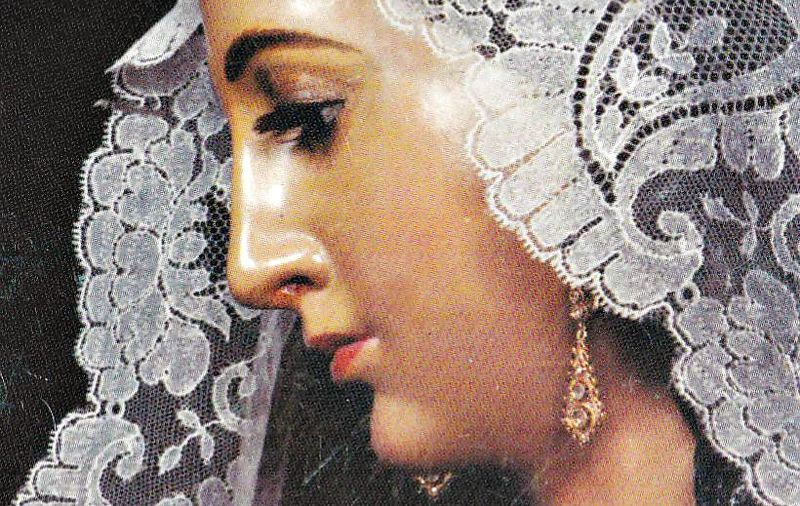

Barbate tiene una gran variedad de fiestas y verbenas que cuentan con gran tradición, dando así una propuesta cultural y de ocio de marcado interés turístico. Entre ellas, destacan las siguientes:
- Carnaval. Tiene lugar en febrero o marzo, una semana después que el de Cádiz capital. En el fin de semana se instala una caseta en las inmediaciones del río y, en los días próximos, las agrupaciones barbateñas y a menudo las de otras localidades actúan en diferentes lugares, sobre todo en la plaza de los Seis Grifos. A la semana siguiente, se celebra el llamado 'Carnaval de los Jartibles', con actuaciones de agrupaciones en diferentes bares y peñas.
- Semana Santa. En la Semana Santa de Barbate, las hermandades salen en procesión el Domingo de Ramos, todas las noches desde el Lunes hasta el Viernes Santo y el Domingo de Resurrección.
- Romería de Fátima. El 13 de mayo, los barbateños se desplazan en romería en honor a la Virgen de Fátima hasta el "Jarillo", en el parque natural. Esta celebración culmina con una verbena popular.
- Semana Gastronómica del Atún. Se celebra desde 2008 en el mes de mayo. Es una feria gastronómica en la que, como su nombre indica, el atún es el elemento principal. En las primeras cinco ediciones se situó en el recinto ferial, pero desde el año 2013 se ubica en "La Chanca", junto a la desembocadura del río. Durante estos días se instalan casetas feriales, algunas atracciones y stands de empresas locales donde se pueden degustar los diferentes platos de la feria. Finalmente, en 2019 tras varias denuncias por el ruido, la Junta de Andalucía prohibió realizar actividades que pueda producir ruido en dicho lugar. Por ello dicho año regresó al recinto ferial aprovechando el Supersol frente al puerto recién cerrado para que en el aparcamiento se localize las casetas y en el edificio el lugar de los actos principales.
- Verbena de San Juan. Los almadraberos levantinos, en sus relaciones con los de Barbate, fueron los que trajeron esta fiesta a la localidad. En la noche del 23 de junio, en las inmediaciones de "La Chanca", se queman los "juanillos", imitaciones del hombre y la mujer, que toman la figura de los personajes más destacados del año, para celebrar la llegada del verano. Es costumbre entre los barbateños bajar a la playa y refrescarse en el mar tras ver la quema.
- Feria del Carmen. Se celebra durante una semana alrededor del fin de semana más próximo al 16 de julio, festividad local, en honor a la patrona, Nuestra Señora del Carmen. Las casetas y atracciones se instalan en el recinto ferial, y solo abren por la noche. La fiesta más importante tiene lugar el 16 de julio, que comienza con una procesión de alabanzas de la patrona hasta la lonja pesquera, donde se celebra la eucaristía y la función de la hermandad, y a la que le sigue por la tarde una procesión marítima, terminando con la procesión de vuelta.
